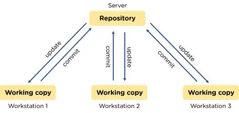

Verziókövető rendszerek

Ez az ábra technikailag leírja, hogy pontosan, mi is lenne az alapötlet a
verziókövető rendszereknek
. Annyival kiegészíteném, hogy segíti az átlátható munkát, a "múltban" történt változásokat.
asd
123